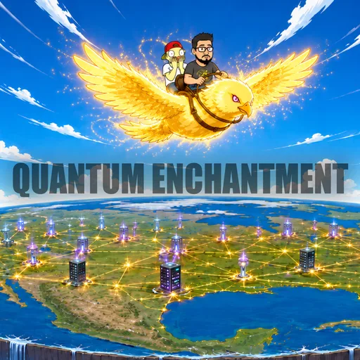
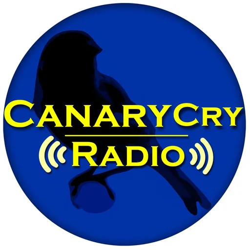
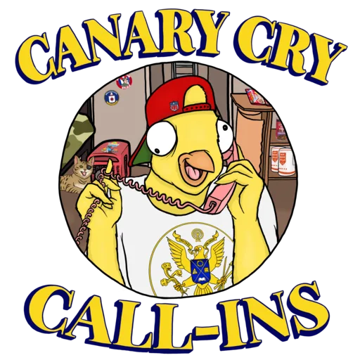
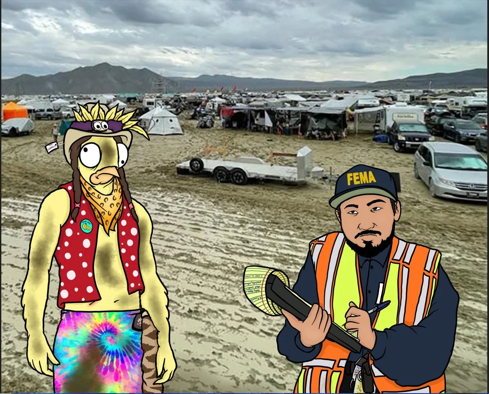

Option A Desk scene
A studio picture: the monitors hang on the wall behind the hosts' desk.
Canary CryShows
The Canary Cry NetworkShows

Canary Cry News Talk
Canary Cry Radio
Canary Cry Clubhouse- Art to comeThe Joyspiracy Theory

Burning Man Research- Art to comeBasil's Bunker
Commissioned artwork goes here
Basil and Gonz at the desk
CANARY CRY
- On a phone: the desk becomes a short banner on top, and the monitors drop into two columns under it.
- Artwork: needs one wide commissioned picture of the desk; the monitors stay live links on top of it.
Option B Monitor grid
No scene: six monitor cards with a line about each show, and the desk artwork as a banner above.
Canary CryShows
The Canary Cry NetworkShows
Commissioned artwork goes here
A wide banner of Basil and Gonz at the desk (optional in this layout)
- Canary Cry News TalkThe flagship discernment broadcast — daily news through a Biblical worldview.
- Canary Cry RadioDeep-cut interviews and conversations with discerners, theologians, and researchers.
- Canary Cry ClubhouseOpen-mic conversations with the community. Wade into deep waters together.
- Art to comeThe Joyspiracy Theory[Description to come]
- Burning Man ResearchThe show has covered Burning Man for over a decade — annual fieldwork, theological analysis, and producer-funded ground-truthing.
- Art to comeBasil's Bunker[Description to come]
- On a phone: one list, a small monitor beside each show's name and line.
- Artwork: works without any; the banner can come later or not at all.
Option C Control-room arc
The monitors curve round the desk like a broadcast control room, angled toward the middle.
Canary CryShows
The Canary Cry NetworkShows
- Canary Cry News Talk
- Canary Cry Radio
- Canary Cry Clubhouse
- Art to comeThe Joyspiracy Theory
- Burning Man Research
- Art to comeBasil's Bunker
Placeholder silhouettes Commissioned artwork of the hosts goes here
- On a phone: the arc flattens into one row that you swipe sideways, snapping to each monitor.
- Artwork: needs a commissioned picture of the hosts from behind or at the desk, to sit in the middle of the arc.